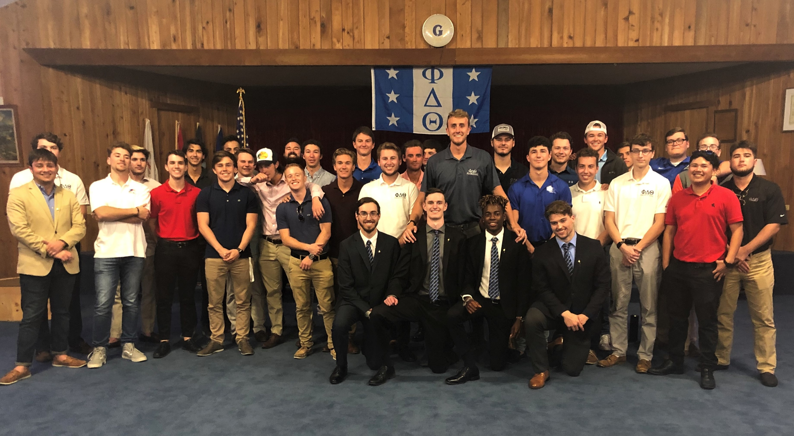
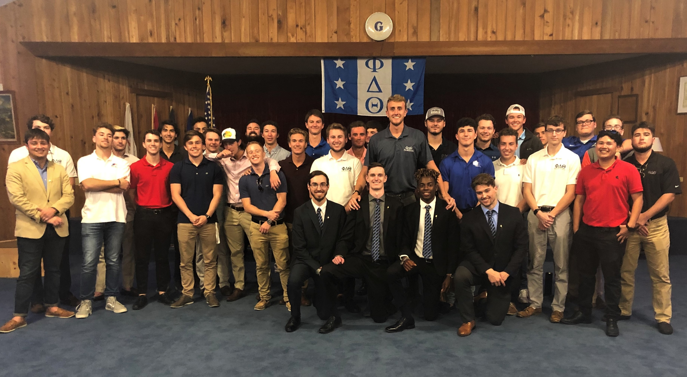

Hello! my name is Gibson Green and I am going into my junior (class of 2021) at Florida Gulf Coast University. I am a Software Engineering Major with a minor in Mathematics. I am a Stellar
Research Assistant for Dr. Derek Buzasi at FGCU. Currently, I am researching Stellar bodies recorded in the 2003 GALEX NASA Campaign. I am using the gPhoton Software. I am in the
Honors College. I have held the position as an Honors College Mentor for the University. I mentored 5 new members of FGCU's Honors College, and helped them acclimate to the University and
bring them to speed on the expectations of the Honors College. Finally, I am a brother in the Florida Xi Chapter of the Phi Delta Theta Florida Xi chapter at FGCU.
In the world of Software Engineering, I have began my initial steps in my long future as an Engineer. I find myself extremely intrigued and interested and look forward to my education!
In my free time I love watching TedTalks about anything having to do with Futurism, I play Intramural Basketball and follow anything that has to do with basketball, I love playing video
games that include Fortnite, NBA 2k19, The Elder Scrolls series, etc.
Lake Forest High School (2013-2017):
I attend LFHS in Lake Forest, Illinois from August of 2013 through June of 2017. I completed 4 years of Spanish,
4 years of math (finishing with AP Calculus AB), 4 years of CAD Engineering, and 3 years of Science Courses. I
played on the LFHS basketball team for 4 years and the robotics team for 2 years. I was in the National Honors Society.
Florida Gulf Coast Univeristy (2017-2021):
Currently, I am a entering my junior year at Florida Gulf Coast University (Class of 2021). I am in FGCUs Honors College
and my sophmore year I held the position as Honors College Mentor. I am a Software Engineering major, minoring in Mathematics.
I have presented at The 232rd American Astronimcal Society, where I presented Exoplanet Light Curve findings.
List of Completed Collegiate Classes Pertaining to Software Engineering Major:
Mathematics: Calculus I, II and III, Discrete Math, Statisitical Methods
Physics: General Physics I w/ lab, General Physics II w/lab, Honors Planet Hunters
English: Composition I and II, Humanities
Software: Intro to Computer Science, Intro to Programming
Top Accomplishments
Academic
FGCU Honors College Member (Fall 2017-Spring 2021)
FGCU Honors College Mentor (Fall 2018-Spring 2019)
FGCU Whitaker Engineering College Deans List (Fall 2017)
Extra-Curricular
Phi Delta Theta Vice President (Spring 2019-Fall 2019)
Phi Eta Sigma: National Honor Society Member (Inducted May 2018)
National Society of Leadership and Sucess Member (Inducted Fall 2018)
FGCU Diversity and Inclusion Certificate Program (Fall 2018-Spring 2019)
Work Samples
Project Name
Media File
Project Description
K2 Analysis Project
FGCU Honors Planet Hunters Research Course Project: K2 Kepler Campaign 15 and 16 Light Curve Analysis. Laura Ferrell and I
analyzed 200 light curves using Dr. Derek Buzasis AstroDev Web-based Light Curve Analysis Tool. Project Description, walkthoughs
and result found in presentation.
Light Curve of Candadite Exoplanet
LFHS Group Automatic Ball Launcher
LFHS Honors CAD Engineering (Year 2) Group Ball Launcher Assignment. In groups, the class was assigned to create a ball
launcher that would autonomous load, reload, and launch a tennis ball. Goal was to make a launcher that could be utilized by the physically disabled.
Could us launcher to play with friends, children, baseball practice, fetch with dog, etc.
FGCU Introduction to Programming assignment: make a video game, make a video, or animation using Sratch. I chose to create
a two person soccer game, where the ball first to 10 wins! Click the link to play.
Click the following link to go to Gibson Green's VSCO Profile Page
Website Accessibility & Usability
Here in Gibson Green's Portfolio Website, the goal was display was knowledge of the following Computer Languages:
HTML
CSS
Javascript
This website should display my knowledge of how to write, edit and learn these low-level languages. Images should display properly, the video should be easy to use, tabs and overall layout is simple to use and looks nice.
Here are some of the examples of topics I learned over the course of the semester:
embedding videos, images and files into HTML
Using Javascript to have tabs and divide different sections for the website
Adding stlying to the website using CSS and creating boxed text


 
